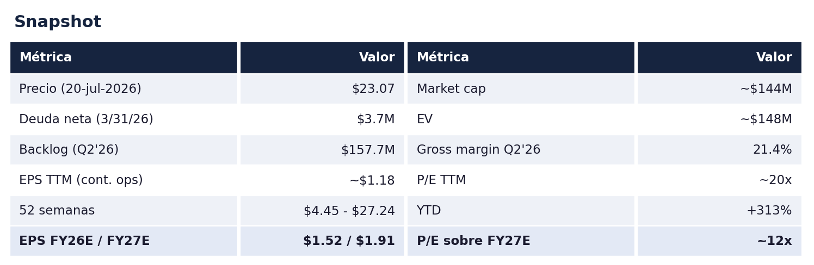
La oportunidad, en una página
SIF cotiza a $23.07 (cierre del 20-jul-2026). Mi fair value para 2027 es de cerca de $31, o sea como +36% de upside desde aquí, y para 2028 podría irse a entre $46 y $58 si el EPS llega a donde lo modelo. Y quiero ser honesto de entrada: este ya no es el deep value que era cuando empecé a comprar a $13. La acción sube +313% en el año, así que la parte fácil del re-rate ya pasó. Lo que queda es una historia de ejecución con un múltiplo todavía barato para defensa.
Lo que te llevas por ese precio: un forjador aeroespacial de Estados Unidos que pasó de perder dinero casi todos los años desde 2016 a un margen neto de 10% en el último trimestre (10-Q Q2 FY2026), con un backlog récord de $157.7M creciendo +22% contra el año pasado, y una demanda que no es una promesa sino contratos de defensa a varios años. A $23 pagas como 12 veces mis utilidades de 2027, mientras los grandes del sector, HEICO (HEI) y Howmet (HWM), cotizan arriba de 60 veces utilidades.
Nota macro simple: en defensa, cuando la demanda está metida en contratos plurianuales y la capacidad de la industria está saturada, el proveedor chico que ya inflexionó es justo el tipo de nombre que se re-califica cuando el mercado por fin lo voltea a ver.
1. ¿Qué hace la empresa?
SIFCO Industries hace piezas forjadas de metal para aeroespacial y defensa. Forjar es dar forma al metal bajo presión extrema para que quede más fuerte y más duradero, y esas piezas van donde fallar no es opción: motores de avión, trenes de aterrizaje, estructuras, helicópteros y turbinas. Fundada en 1913, opera dos plantas, SIFCO Forge en Cleveland, Ohio, y Quality Aluminum Forge en Orange, California, y Estados Unidos es 75% de su revenue (10-K FY2025). Factura $95.3M en los últimos doce meses y tiene apenas 6.25M de acciones.
El punto de calidad del negocio es la barrera de entrada. Una vez que te certifican como proveedor en un programa aeroespacial o de defensa, te quedas años, porque reemplazar un componente forjado requiere pruebas y recertificación caras y lentas. El mix ya es 66% militar en el primer semestre de FY2026 (56% en FY2025), y el cliente es el prime, no el Pentágono: SIF es proveedor de segundo nivel de Boeing, Sikorsky y Lockheed. Eso trae concentración, en FY2025 un cliente fue 18% de las ventas y los dos mayores 34% (10-K FY2025), pero también relaciones pegajosas de largo plazo.
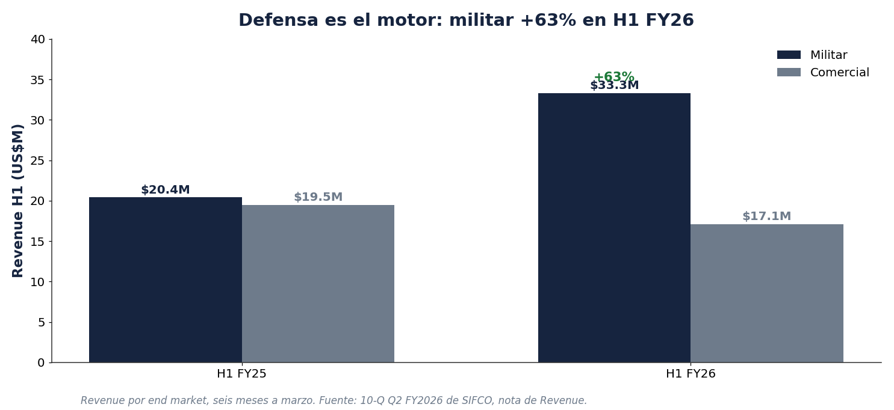
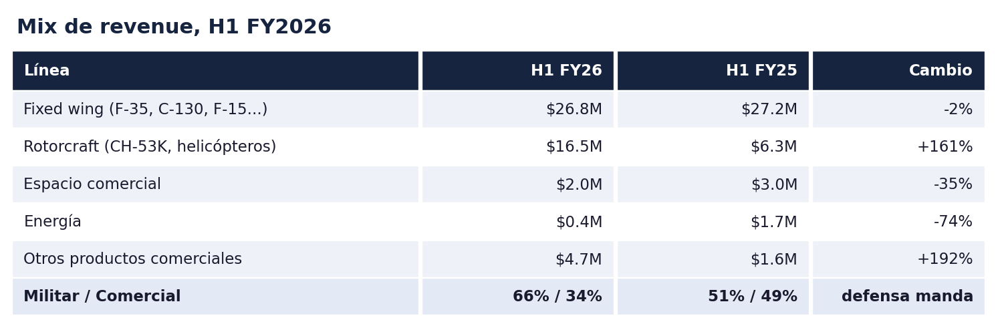
El dato que más me gusta de esa tabla: rotorcraft se multiplicó por 2.6x en un año. Ese es el CH-53K entrando al P&L. Fuente: nota de Revenue del 10-Q Q2 FY2026.
2. Por qué nadie la seguía: una década de infierno
Para entender la oportunidad hay que entender por qué estaba tan barata. SIF esencialmente perdió dinero todos los años desde 2016. Tan reciente como FY2024 perdió $8.6M de operaciones continuas (10-K FY2025). No tenía cobertura de analistas, y con razón. La lista de golpes es larga:
- Energía y turbinas. La caída del mercado de energía después de 2014 y la pérdida de un cliente clave en 2015 vaciaron el negocio de turbinas industriales, y llevaron a cerrar la planta de Alliance, Ohio en 2017.
- CBlade. SIF tenía una filial en Italia, CBlade, que hacía álabes (blades) para turbinas de generación de energía. Nunca dio los retornos esperados y por más de una década se comió capital y atención del management que el negocio core de aeroespacial necesitaba.
- COVID. Destruyó el aeroespacial comercial.
- Y la gota que derramó el vaso. Fue objetivo de una adquisición que fracasó, sufrió un incidente de ciberseguridad, y para abril de 2023 había caído en default con JPMorgan. Entró en forbearance formal y pidió $3M de emergencia a la holding de un director (Garnet Holdings, del director Mark Silk, hoy con 13% de la empresa vía su trust familiar según el proxy de dic-2025) solo para no apagar las luces.
Con un CEO en el puesto desde 2016 y sin ningún viento de cola en sus mercados, no había razón para creer que algo cambiaría. Esa es exactamente la clase de historia que el mercado abandona, y la razón por la que el giro pasó tan desapercibido.
3. El giro: qué cambió en 2024
- Nuevo CEO. George Scherff entró en julio de 2024, con un background de CEO de portafolio de private equity (Lund International, Paradigm Packaging, Hartzell Manufacturing, entre otros, según su bio en el proxy). Sus roles previos terminaron consistentemente en ventas a compradores estratégicos o de PE. Ese detalle importa para el ángulo de M&A más adelante.
- Venta de CBlade. En octubre de 2024 vendieron CBlade por $14.4M en efectivo (10-K FY2025, nota de operaciones discontinuadas), y con eso refinanciaron a JPMorgan con el prestamista especializado Siena Lending y pagaron el préstamo del director. Balance limpio.
- Gente de aeroespacial en el board. Entró Bob Johnson, ex-chairman de Honeywell Aerospace. Ese es el tipo de nombre que no se sienta en el board de una microcap muerta.
- Y la cereza del pastel: el ciclo de defensa explotó al mismo tiempo. El contrato plurianual del CH-53K de $10.9B (septiembre 2025), el F-15EX creciendo flota, y una escasez de capacidad de forja en toda la industria (BCG, 2024) que por primera vez en años le dio a SIF poder de fijar precios.
4. La tesis: el triple play
El mercado veía una microcap ilíquida y quebrada. Los datos muestran una empresa que ya limpió el balance, volvió a ganar dinero, y tiene tres cosas convergiendo a la vez. Ese es el setup.
Pilar 1: la inflexión ya está en los números
No es una historia de esperanza. Las ventas del Q2 FY2026 subieron +39% a $26.4M, el EPS pasó de una pérdida de $0.23 a una ganancia de $0.43, y en el primer semestre ya llevan $0.72 de EPS con $4.4M de utilidad neta (10-Q Q2 FY2026). Todos los números que siguen salen de los 10-Q y 10-K en SEC EDGAR.
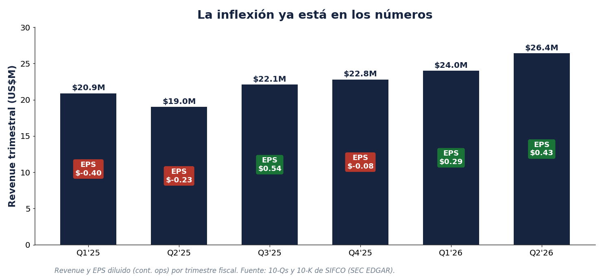
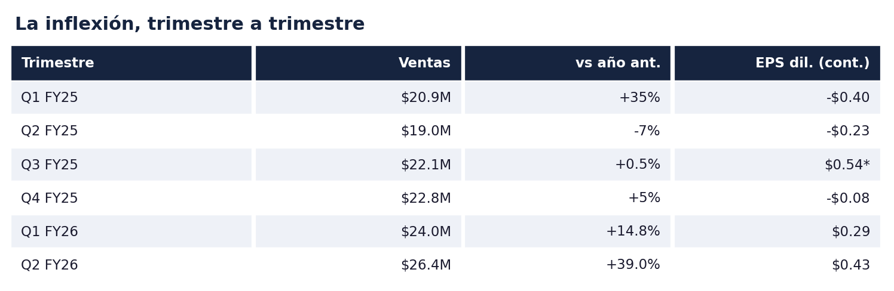
El EPS GAAP del Q3 FY25 de $0.54 incluye partidas no operativas; el ajustado fue como $0.16.
Pilar 2: apalancamiento operativo, y es brutal
La base de costos de SIF es casi fija, así que cuando sube el volumen el margen se dispara. El gross margin pasó de 8.3% en el Q2 FY25 a 21.4% en el Q2 FY26 (gross profit de $1.57M a $5.66M sobre el income statement del 10-Q). Y el número que más me gusta: la utilidad bruta subió $4.1M sobre un aumento de ventas de $7.4M, o sea un margen incremental de ~55%. El SG&A subió solo $0.6M en el mismo periodo, así que cada dólar extra de venta cae en buena proporción a la utilidad.
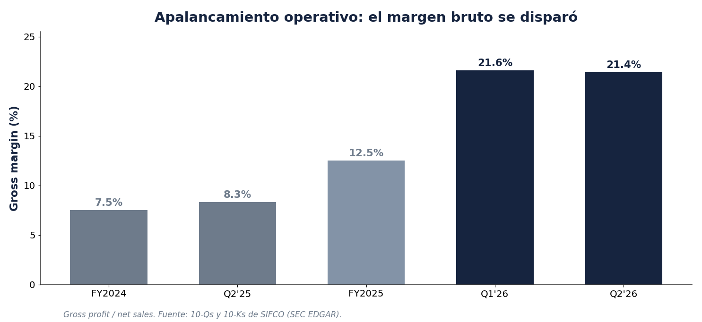
La empresa además ya genera caja de verdad: $5.2M de operating cash flow en el semestre con capex de solo $0.2M, y con eso pagó la mitad de su deuda, de $10.6M a $5.1M en seis meses (nota de deuda del 10-Q).
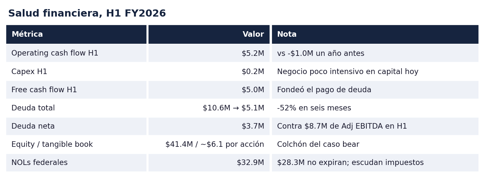
Pilar 3: el backlog acelera, y trae la demanda de defensa
El backlog (remaining performance obligations) está en récord de $157.7M, +22% contra el año pasado y +13% contra el trimestre anterior (10-Q Q2 FY2026; la serie completa está en el XBRL de EDGAR). Y soy honesto con la trayectoria: no fue línea recta, bajó a $119M al cierre de FY2025 y de ahí encadenó dos saltos seguidos hasta el récord.
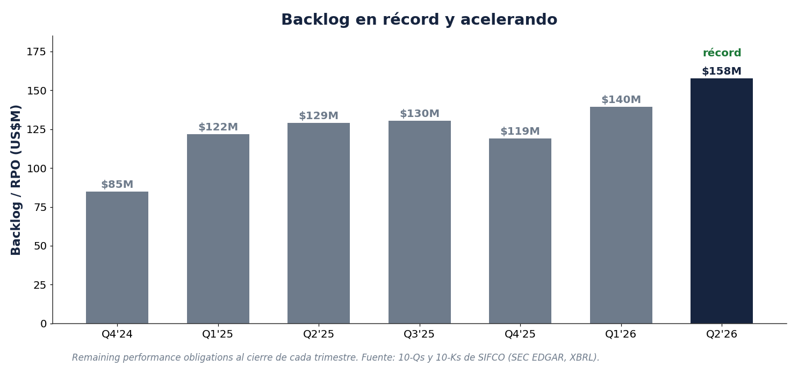
Un detalle de arbitraje de información: la empresa no pone el backlog en el press release, está enterrado en el filing. De esos $157.7M, $95.3M están programados para entregarse en los próximos 12 meses según el propio 10-Q. Y eso es piso, no techo, porque encima va todo lo que se ordena y entrega dentro del año (en FY2025 facturaron $84.8M cuando el backlog de un año antes era de solo $85.0M).
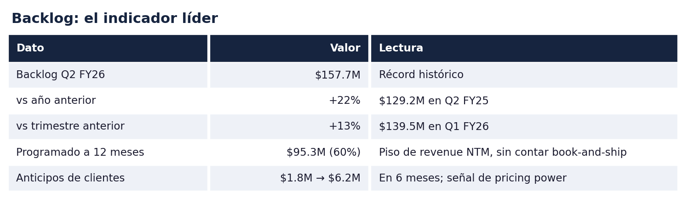
Y hay otro tell de pricing power escondido en los filings: las contract liabilities (anticipos de clientes) saltaron de $1.8M a $6.2M en seis meses (nota de contract balances del 10-Q). Que los clientes paguen por adelantado en vez de a crédito post-entrega señala oferta apretada y valida que SIF está subiendo precios.
5. El contexto: por qué la demanda es contractual, no aspiracional
En un artículo de un analista en una comunidad privada (por eso no lo puedo compartir públicamente) vi mapeado cada programa donde SIF forja piezas contra el presupuesto del Pentágono (el P-1 de la solicitud FY2027). El patrón importa: casi todos los programas bajaron en FY2026 y rebotan fuerte en FY2027. Eso no fue caída de demanda, fue arquitectura de presupuesto: en FY26 el dinero extra se fue a barcos y municiones, no a aviones. La demanda nunca se fue.
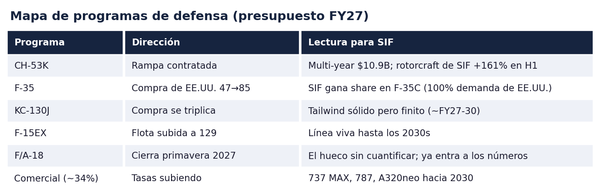
El punto más fuerte de todo: la capacidad de forja aeroespacial es el cuello de botella número uno de la industria según BCG (2024), con lead times que pasaron de 4-6 semanas a 20-40 y sin capacidad nueva relevante hasta 2028. Eso valida el pricing power de SIF y explica por qué su margen se sostiene.
El timing para nosotros: hay un lag de 1 a 3 años entre presupuesto y orden de forja, así que la ola del presupuesto FY27 pega en el P&L de SIF entre FY2027 y FY2029. El backlog récord de hoy todavía es mayormente dinero de FY24-26, o sea apenas estamos surfeando la ola. El caveat que no voy a esconder: parte del salto FY27 depende de un paquete de $350B de reconciliación que el Congreso no ha aprobado.
6. Los números y el modelo
Construí el modelo directo de los filings y no inventé un total. El primer semestre real trae $50.4M de revenue y $0.72 de EPS. Para el segundo semestre asumo +10% contra el primero, o sea $55.5M, que contra los $44.9M del segundo semestre de FY2025 es crecer +24% YoY, menos que el +26% que trae el H1. Sumado da ~$106M de revenue en FY2026 y $1.52 de EPS, y cuadra con el 10-Q: $95.3M del backlog se entregan en 12 meses y encima va lo que se ordena y entrega dentro del año. De ahí crezco low-teens con expansión suave de margen.
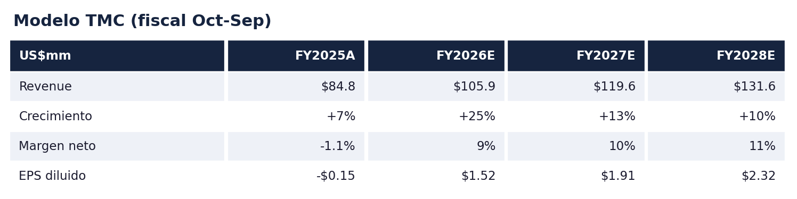
Los estimados son conservadores en margen: el H1 real ya trae 8.8% de margen neto con el Q2 en 10%, y modelo 9% para el año. Un límite honesto: SIF no da guidance ni desglose de revenue por programa, así que el modelo se apoya en el backlog del 10-Q y en el semestre real, no en números que la empresa publique hacia adelante.
7. Valuación
Valúo con EPS porque prefiero ponerle múltiplo a una empresa que ya es rentable. A $23.07 la acción cotiza a ~20x el EPS TTM y ~12x mi EPS de FY2027, con EV/Adj EBITDA TTM de ~10x. Mientras tanto los grandes del sector cotizan en otro planeta: HEICO (HEI) a ~63x utilidades y Howmet (HWM) a ~62x, con EV/EBITDA de 32x y 43x. No espero que a SIF le paguen múltiplos de HEICO, pero el hueco entre 12x y 60x te dice cuánto espacio hay si la ejecución sigue.
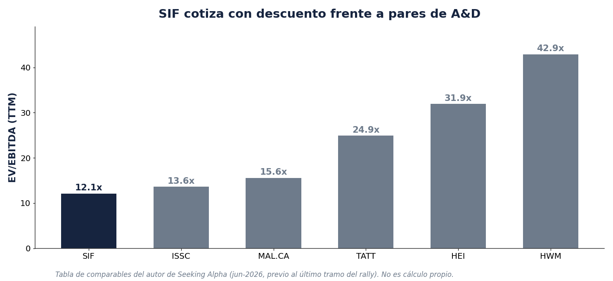
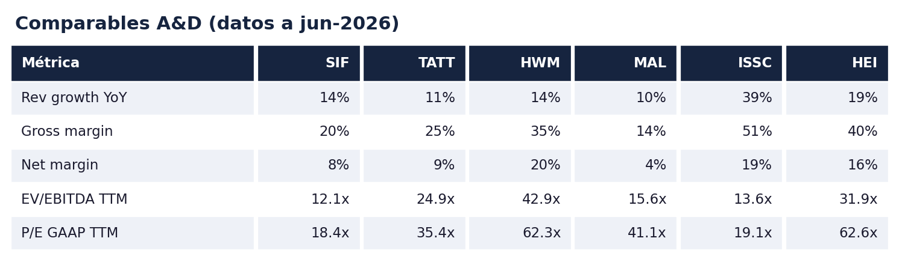
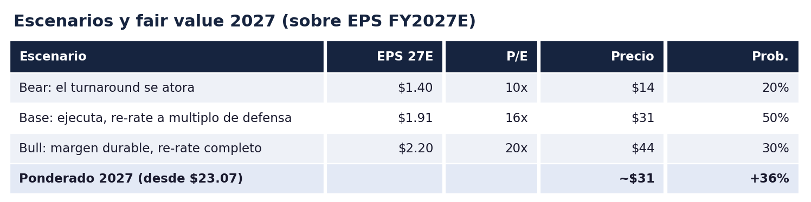
Ponderado eso da cerca de $31 para 2027, como +36% desde $23.07. Y viendo a 2028: si el EPS llega a los $2.32 que modelo, a 20-25x la acción podría valer entre $46 y $58. Son mis expectativas, no una promesa. Yo empecé a comprar en $13 y creo que la tesis todavía tiene muchas piernas; el upside a un año es más modesto que otras tesis mías, pero el runway multi-año sigue completo. El caso bear tiene colchón: la empresa ya es rentable, hay ~$6 por acción de tangible book y $32.9M de NOLs federales que escudan impuestos (10-K FY2025). Y de referencia externa, un autor de Seeking Alpha trae price target de $40 (un autor, no sell-side; no lo uso como ancla).
8. Checklist Micro Capo: 7.5 / 10
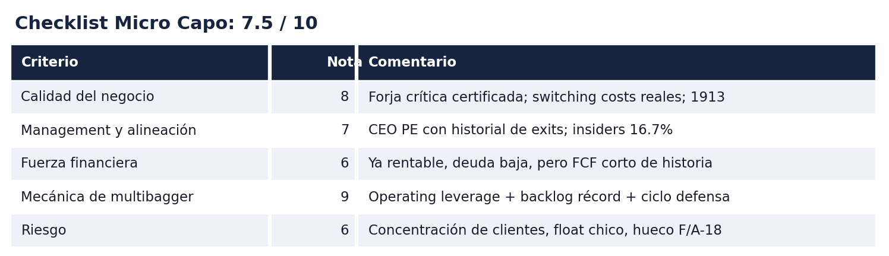
Clasificación: transición de valor a calidad / turnaround con optionality de defensa. La nota de los pilares financiero y de riesgo es lo que evita que sea un 9.
9. Catalizadores
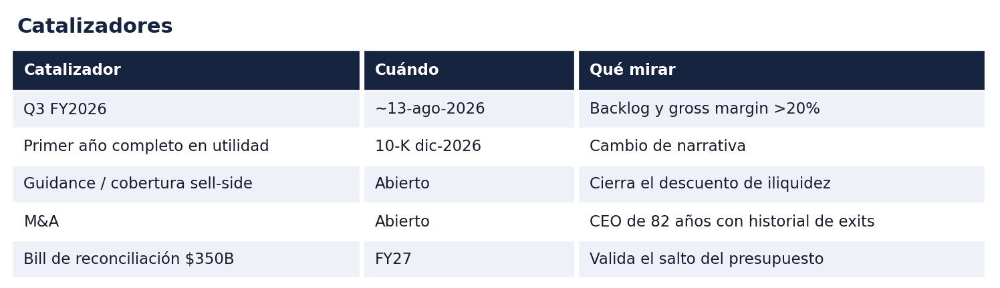
- Q3 FY2026 (esperado ~13-ago-2026). El siguiente juez. Si el backlog sigue arriba y el gross margin se sostiene arriba de 20%, la tesis multi-año se afianza.
- Primer año completo de utilidad en casi una década (10-K de diciembre 2026). Un cambio de narrativa que puede atraer capital nuevo.
- Guidance o cobertura. Si SIF empieza a hacer calls, dar guidance o atraer un analista, se cierra el descuento de iliquidez.
- M&A. CEO de 82 años (edad según el proxy) con historial de exits, un mercado de defensa caliente, y un negocio ya inflexionado con balance limpio. Fue objetivo de adquisición en 2023-24.
- El bill de reconciliación de $350B. Si pasa, valida los números de FY27; si no, hay que recortar el escenario.
10. Riesgos
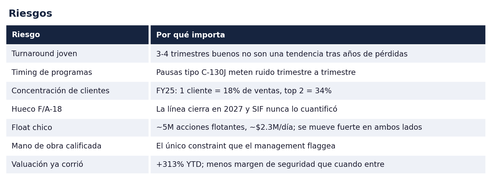
El que más me pesa: el turnaround todavía es joven. Tres o cuatro trimestres buenos no son una tendencia confirmada tras años de pérdidas, y con ~5M de acciones flotantes cualquier tropiezo se mueve fuerte. El hueco del F/A-18 (la línea cierra en primavera 2027 y SIF nunca dijo cuánto revenue le pesa) es el mayor unknown, aunque ya está entrando a los números, lo cual de-riesga.
11. Por qué la tengo
Empecé a comprar a $13, pero mi precio medio quedó en como $17 porque fui sumando conforme la tesis se confirmaba. Muchas veces prefiero promediar a la alza que "promierdar" a la baja. Traía un plan de seguir sumando hasta llevarla a 10% del portafolio. Entré porque el setup me gustó: una forja crítica de defensa saliendo de un turnaround real, con operating leverage confirmado y un backlog acelerando, todavía barata contra sus comparables.
Lo que me mantiene dentro es que lo peor ya pasó. Limpiaron el balance, volvieron a ganar dinero, y le pegaron a un ciclo de defensa metido en contratos a varios años, no en promesas. Pero soy honesto conmigo mismo: a $23 esto ya no es la ganga de info arbitrage que compré. El re-rate ya ocurrió en buena parte, y de aquí en adelante el que manda es la ejecución. Por eso mi add depende de que FY27-28 entregue los $1.90 a $2.30 de EPS, y el primer juez es el Q3 de agosto.
12. Conclusión
El mercado pasó años preciando a SIF por lo que fue: un perdedor crónico sin cobertura. Lo que muestran los filings es un forjador de defensa que ya inflexionó, ganando márgenes que un año antes no existían, con un backlog récord y demanda contractual hasta 2030 en casi todos sus programas. Hoy pago como 12 veces mis utilidades de 2027, y Peter Lynch decía que menos de 15x forward ya era muy barato. Además, muchas veces prefiero pagar múltiplos más altos por empresas que lo valen que pagar 5x u 8x utilidades por empresas que pueden traer más riesgo. La calidad se paga.
La parte que lo protege: ya es rentable, genera caja, pagó la mitad de su deuda en seis meses, tiene ~$6 por acción de tangible book y $32.9M de NOLs de colchón, y la capacidad de forja de toda la industria seguirá apretada al menos hasta 2028. Mi número para 2027 es cerca de $31, con el bull en $44 si el margen aguanta y el bear en $14 si el turnaround tropieza, y para 2028 el rango a 20-25x es $46-58. Ponderado sigo viendo asimetría a favor, pero ahora es una historia de mostrar ejecución, no de comprar una ganga dormida.
Fuentes
- Cifras de la empresa: 10-Q Q2 FY2026 (3/31/26) · 10-Q Q1 FY2026 · 10-Q Q3 FY2025 · 10-K FY2025 · 10-K FY2024 · serie de backlog (XBRL, data.sec.gov)
- No-GAAP (EBITDA ajustado): press release Q2 FY2026 (exhibit del 8-K)
- Gobierno corporativo: DEF 14A dic-2025 (edad del CEO, bios, insiders 16.66%, accionistas 5%+)
- Precio y liquidez: precio de mercado del 20-jul-2026 ($23.07; ~$2.3M/día de volumen promedio 90 días)
- Terceros (señalados como tales en el texto): nota de Seeking Alpha, Buy PT $40 · BCG, capacidad de forja (2024) · artículo de un analista en una comunidad privada sobre el presupuesto FY2027 (P-1), no compartible públicamente · múltiplos de HEI/HWM al corte de jun-2026
Aviso legal. Esto es mi opinión personal con fines educativos. No es asesoría de inversión ni recomendación de compra o venta. Mantengo una posición larga en SIF y puedo cambiarla sin aviso. Las microcaps son riesgosas, incluida la pérdida total. Haz tu propia tarea.